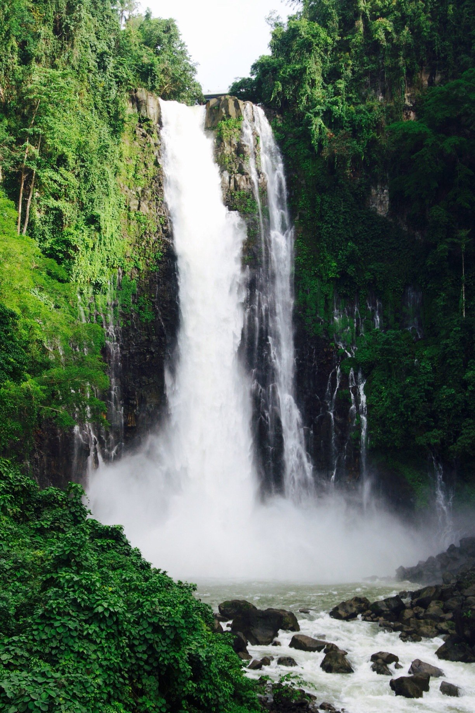

Northern Mindanao, also known as Region 10, is a region located in the northern part of Mindanao island in the Philippines. It is composed of five provinces: Bukidnon, Camiguin, Misamis Occidental, Misamis Oriental, and Lanao del Norte. Northern Mindanao is known for its diverse landscapes, natural wonders, cultural heritage, and agricultural abundance.
Bukidnon is a province known as the "Food Basket of Mindanao" due to its vast agricultural lands and rich natural resources. It is home to rolling hills, mountains, and the iconic Mount Kitanglad, which is part of the Mount Kitanglad Range Natural Park. Bukidnon is also known for its cool climate, lush forests, and the Kaamulan Festival, a colorful celebration of the province's indigenous cultures.
Camiguin is an island province known for its volcanic landscapes and pristine beaches. It is often called the "Island Born of Fire" due to its seven volcanoes. Camiguin offers attractions such as the Sunken Cemetery, White Island, Katibawasan Falls, and the hot and cold springs. The Lanzones Festival is a popular event celebrated in Camiguin, showcasing the province's famous lanzones fruit.
Misamis Occidental is a province known for its natural attractions, historical sites, and cultural heritage. It offers beautiful beaches, waterfalls, and caves, such as the scenic Panguil Bay Bridge and the enchanting Baliangao Protected Landscape and Seascape. The province is also famous for the Subanen Festival, a cultural celebration of the indigenous Subanen people.
Misamis Oriental is a province known for its stunning coastlines, diving spots, and eco-tourism sites. It offers attractions like the majestic Maria Cristina Falls, the stunning Mantianak Botanical Garden, and the white sandy beaches of the resort town of Balingoan. Misamis Oriental is also home to Cagayan de Oro City, a bustling urban center and the regional capital, known for its adventure activities, such as whitewater rafting and ziplining.
Lanao del Norte is a province known for its natural landscapes and cultural heritage. It offers attractions like the scenic Maria Cristina Falls, Tinago Falls, and the captivating Lake Lanao, the second-largest lake in the Philippines. Lanao del Norte is also known for the annual Sultan Kudarat Festival, which celebrates the province's diverse cultural traditions.
Northern Mindanao offers a blend of natural wonders, cultural diversity, and adventure opportunities. Its lush mountains, pristine beaches, and vibrant festivals provide a captivating experience for visitors. Whether you seek outdoor adventures, cultural immersion, or simply want to enjoy the region's natural beauty, Northern Mindanao has much to offer.